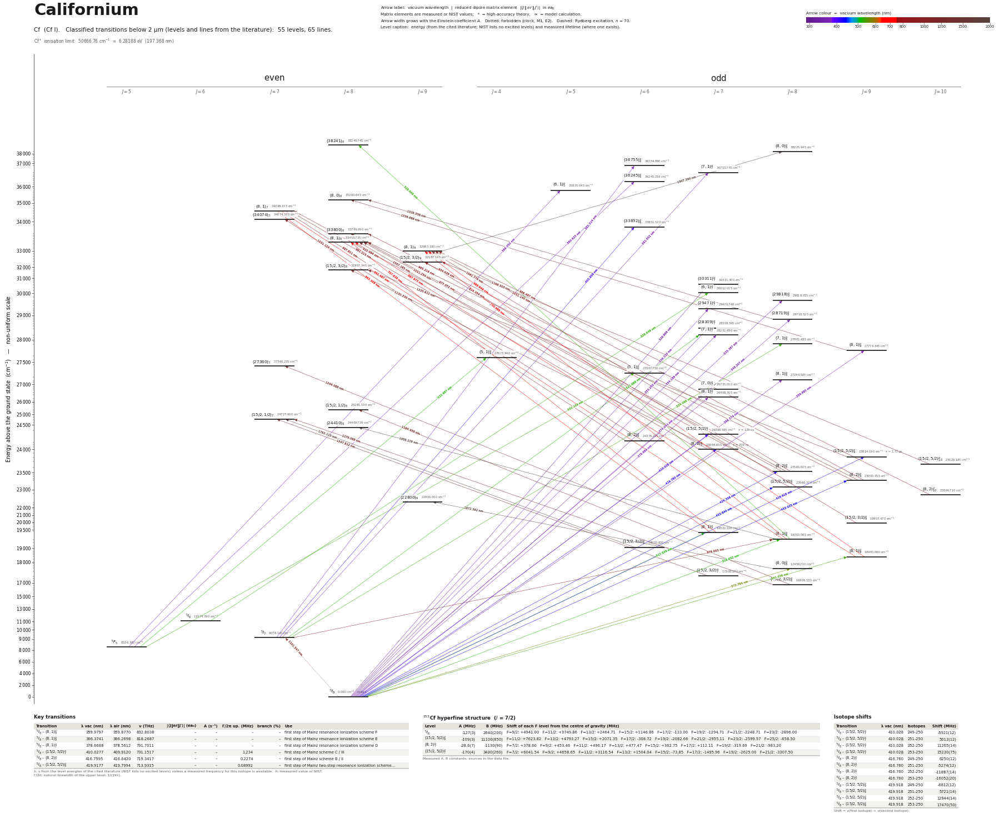

Californium energy level diagram
Energy levels and transitions of neutral californium (Cf I): 55 levels and 65 classified lines below 2 µm taken from the cited literature, each line with its vacuum wavelength and frequency. The NIST Atomic Spectra Database lists only the ground level and the ionisation limit of californium, so the level energies on this page are those of the literature sources named below.
Hover a line or a level to isolate it, click to keep it selected. Scroll to zoom, drag to move.

Download: diagram (PDF) diagram (SVG) transitions (CSV) levels (CSV) source code

Key transitions of californium
| Transition | λ vac (nm) | λ air (nm) | ν (THz) | |⟨J‖er‖J′⟩| (ea₀) | A (s⁻¹) | Γ/2π up. (MHz) | branch (%) | Use |
|---|---|---|---|---|---|---|---|---|
| 5I8 – (8,1)°9 | 359.9797 | 359.8770 | 832.8038 | – | – | – | – | first step of Mainz resonance ionization scheme F |
| 5I8 – (8,1)°8 | 366.3741 | 366.2698 | 818.2687 | – | – | – | – | first step of Mainz resonance ionization scheme E |
| 5I8 – (8,1)°7 | 378.6688 | 378.5612 | 791.7011 | – | – | – | – | first step of Mainz resonance ionization scheme D |
| 5I8 – (15/2,5/2)°7 | 410.0277 | 409.9120 | 731.1517 | – | – | 1.234 | – | first step of Mainz scheme C / III |
| 5I8 – (8,2)°7 | 416.7595 | 416.6420 | 719.3417 | – | – | 0.2274 | – | first step of Mainz scheme B / II |
| 5I8 – (15/2,5/2)°9 | 419.9177 | 419.7994 | 713.9315 | – | – | 0.08992 | – | first step of Mainz two-step resonance ionization scheme… |
λ, ν from the level energies of the cited literature (NIST lists no excited levels) unless a measured frequency for this isotope is available. A: measured value or NIST. Γ/2π: natural linewidth of the upper level, 1/(2πτ).
253Cf hyperfine structure (I = 7/2)
| Level | A (MHz) | B (MHz) | Shift of each F level from the centre of gravity (MHz) |
|---|---|---|---|
| 5I8 | -127(3) | 2640(200) | F=9/2: +4941.00 F=11/2: +3749.86 F=13/2: +2464.71 F=15/2: +1146.86 F=17/2: -133.00 F=19/2: -1294.71 F=21/2: -2248.71 F=23/2: -2896.00 |
| (15/2,5/2)°9 | -109(3) | 11100(850) | F=11/2: +7623.82 F=13/2: +4793.27 F=15/2: +2071.35 F=17/2: -308.72 F=19/2: -2082.66 F=21/2: -2955.11 F=23/2: -2599.57 F=25/2: -658.50 |
| (8,2)°7 | -28.6(7) | -1130(90) | F=7/2: +378.60 F=9/2: +453.46 F=11/2: +496.17 F=13/2: +477.47 F=15/2: +362.75 F=17/2: +112.11 F=19/2: -319.69 F=21/2: -983.20 |
| (15/2,5/2)°7 | -170(4) | 3430(260) | F=7/2: +6041.54 F=9/2: +4658.65 F=11/2: +3116.54 F=13/2: +1504.04 F=15/2: -73.85 F=17/2: -1495.96 F=19/2: -2625.00 F=21/2: -3307.50 |
Measured A, B constants; sources in the data file.
Isotope shifts
| Transition | λ vac (nm) | Isotopes | Shift (MHz) |
|---|---|---|---|
| 5I8 – (15/2,5/2)°7 | 410.028 | 249-250 | -5921(12) |
| 5I8 – (15/2,5/2)°7 | 410.028 | 251-250 | 5013(12) |
| 5I8 – (15/2,5/2)°7 | 410.028 | 252-250 | 11265(14) |
| 5I8 – (15/2,5/2)°7 | 410.028 | 253-250 | 15230(75) |
| 5I8 – (8,2)°7 | 416.760 | 249-250 | 6250(12) |
| 5I8 – (8,2)°7 | 416.760 | 251-250 | -5274(12) |
| 5I8 – (8,2)°7 | 416.760 | 252-250 | -11887(14) |
| 5I8 – (8,2)°7 | 416.760 | 253-250 | -16052(20) |
| 5I8 – (15/2,5/2)°9 | 419.918 | 249-250 | -6812(12) |
| 5I8 – (15/2,5/2)°9 | 419.918 | 251-250 | 5721(14) |
| 5I8 – (15/2,5/2)°9 | 419.918 | 252-250 | 12944(14) |
| 5I8 – (15/2,5/2)°9 | 419.918 | 253-250 | 17470(50) |
Shift = ν(first isotope) − ν(second isotope).
Closed and nearly closed transitions of californium
| Transition | λ vacuum (nm) | Lower level | A (s⁻¹) | Leak per scattered photon | Photons before a leak | Where the leak goes |
|---|---|---|---|---|---|---|
| 5I8 → (8,1)°9 | 541.0360 | ground | – | closed | – | no other level can be reached by electric-dipole decay |
A transition is closed when its upper level can decay only to the level it was excited from, so the atom keeps scattering photons. “closed”: among the levels NIST lists, no other level below the upper level has the opposite parity and |ΔJ| ≤ 1, so no other electric-dipole decay exists. Otherwise the leak is the sum of the branching ratios of the other decay lines of the upper level (or 1 − branching ratio where that of the line itself has been measured), and the number of photons is 1 / leak. “≥” and “≤”: at least one possible decay path has no listed rate, so the leak is a lower limit. These numbers are derived from the branching ratios, lifetimes and rates of this page, not measured as such; the tag names the weakest of the inputs, * marks theory and ≈ a model or semi-empirical calculation. Listed: lines that start on the ground level or on a metastable level and leak at most 10 %, unless more than three possible decay paths have no listed rate. Fine-structure levels only: hyperfine and Zeeman dark states and forbidden decays without a listed rate are not considered. Select a line in the diagram for the full list of its leak channels.
Listed Cf transitions below 2 µm
| Lower level | Upper level | λ vacuum (nm) | λ air (nm) | ν (THz) | Type | |⟨J‖er‖J′⟩| (ea₀) | A (s⁻¹) | Branching (%) | Source of matrix element / A |
|---|---|---|---|---|---|---|---|---|---|
| 5I8 | (30311)°7 | 329.9089 | 329.8139 | 908.7129 | E1 | – | – | – | – |
| 5I8 | (29818)°8 | 335.3673 | 335.2709 | 893.9228 | E1 | – | – | – | – |
| 5I8 | (29471)°7 | 339.3196 | 339.2222 | 883.5106 | E1 | – | – | – | – |
| 5I8 | (28719)°8 | 348.2073 | 348.1076 | 860.9597 | E1 | – | – | – | – |
| 5I8 | (28309)°7 | 353.2496 | 353.1487 | 848.6703 | E1 | – | – | – | – |
| 5I8 | (7,1)°7 | 354.1993 | 354.0981 | 846.3948 | E1 | – | – | – | – |
| 5I8 | (8,1)°9 | 359.9797 | 359.8770 | 832.8038 | E1 | – | – | – | – |
| 5F5 | (36245)°6 | 360.6355 | 360.5326 | 831.2894 | E1 | – | – | – | – |
| 5I7 | (36755)°6 | 361.3142 | 361.2111 | 829.7279 | E1 | – | – | – | – |
| 5I7 | (7,1)°7 | 361.8518 | 361.7486 | 828.4952 | E1 | – | – | – | – |
| 5F5 | (6,1)°5 | 366.0501 | 365.9458 | 818.9930 | E1 | – | – | – | – |
| 5I8 | (8,1)°8 | 366.3741 | 366.2698 | 818.2687 | E1 | – | – | – | – |
| 5I8 | (7,0)°7 | 374.0414 | 373.9351 | 801.4954 | E1 | – | – | – | – |
| 5I8 | (8,1)°7 | 378.6688 | 378.5612 | 791.7011 | E1 | – | – | – | – |
| 5I7 | (33852)°6 | 403.6592 | 403.5451 | 742.6871 | E1 | – | – | – | – |
| 5I8 | (15/2,5/2)°7 | 410.0277 | 409.9120 | 731.1517 | E1 | – | – | – | – |
| 5I8 | (8,2)°7 | 416.7595 | 416.6420 | 719.3417 | E1 | – | – | – | – |
| 5I8 | (15/2,5/2)°9 | 419.9177 | 419.7994 | 713.9315 | E1 | – | – | – | – |
| 5I8 | (8,2)°8 | 424.3577 | 424.2383 | 706.4617 | E1 | – | – | – | – |
| 5I8 | (8,2)°9 | 433.0250 | 432.9033 | 692.3214 | E1 | – | – | – | – |
| 5I8 | (15/2,5/2)°8 | 433.6444 | 433.5225 | 691.3325 | E1 | – | – | – | – |
| 5I8 | (8,1)°7 | 517.5389 | 517.3948 | 579.2656 | E1 | – | – | – | – |
| 5I8 | (8,1)°8 | 518.0524 | 517.9082 | 578.6913 | E1 | – | – | – | – |
| 5F5 | (5,1)°4 | 521.9871 | 521.8418 | 574.3292 | E1 | – | – | – | – |
| 5I7 | (7,1)°7 | 522.0693 | 521.9240 | 574.2388 | E1 | – | – | – | – |
| (8,1)°8 | (38241)8 | 528.0478 | 527.9009 | 567.7374 | E1 | – | – | – | – |
| 5I6 | (6,1)°7 | 528.0493 | 527.9024 | 567.7357 | E1 | – | – | – | – |
| 5F5 | (5,1)°6 | 532.1592 | 532.0112 | 563.3511 | E1 | – | – | – | – |
| 5I7 | (7,1)°8 | 534.0656 | 533.9171 | 561.3401 | E1 | – | – | – | – |
| 5I8 | (8,1)°9 | 541.0360 | 540.8856 | 554.1082 | E1 | – | – | – | – |
| 5I8 | (8,0)°8 | 572.7636 | 572.6047 | 523.4139 | E1 | – | – | – | – |
| (8,1)°8 | (8,1)7 | 662.4671 | 662.2842 | 452.5394 | E1 | – | – | – | – |
| (8,1)°7 | (8,1)7 | 663.3088 | 663.1256 | 451.9652 | E1 | – | – | – | – |
| (8,1)°9 | (8,1)8 | 667.9726 | 667.7882 | 448.8096 | E1 | – | – | – | – |
| (8,1)°9 | (8,1)9 | 689.6495 | 689.4592 | 434.7027 | E1 | – | – | – | – |
| (8,1)°7 | (8,1)8 | 707.6382 | 707.4431 | 423.6522 | E1 | – | – | – | – |
| (8,1)°8 | (8,1)9 | 730.9880 | 730.7866 | 410.1195 | E1 | – | – | – | – |
| (15/2,3/2)°9 | (15/2,3/2)9 | 814.3538 | 814.1299 | 368.1354 | E1 | – | – | – | – |
| (8,2)°8 | (8,1)7 | 923.0942 | 922.8410 | 324.7691 | E1 | – | – | – | – |
| (8,2)°9 | (33800)8 | 934.0264 | 933.7702 | 320.9678 | E1 | – | – | – | – |
| (8,2)°7 | (8,1)7 | 961.2150 | 960.9514 | 311.8891 | E1 | – | – | – | – |
| (8,2)°9 | (8,1)8 | 965.2156 | 964.9509 | 310.5964 | E1 | – | – | – | – |
| (8,2)°8 | (33800)8 | 977.0716 | 976.8037 | 306.8275 | E1 | – | – | – | – |
| 5I7 | (8,1)°8 | 978.0028 | 977.7346 | 306.5354 | E1 | – | – | – | – |
| (8,2)°10 | (8,1)9 | 988.4871 | 988.2161 | 303.2841 | E1 | – | – | – | – |
| (8,2)°6 | (8,1)7 | 997.8108 | 997.5373 | 300.4502 | E1 | – | – | – | – |
| (8,2)°9 | (8,1)9 | 1011.1402 | 1010.8631 | 296.4895 | E1 | – | – | – | – |
| (8,2)°8 | (8,1)8 | 1011.2542 | 1010.9771 | 296.4561 | E1 | – | – | – | – |
| (8,2)°6 | (34074)7 | 1031.1240 | 1030.8414 | 290.7434 | E1 | – | – | – | – |
| (8,2)°7 | (8,1)8 | 1057.1853 | 1056.8957 | 283.5761 | E1 | – | – | – | – |
| (8,2)°8 | (8,1)9 | 1061.7791 | 1061.4882 | 282.3492 | E1 | – | – | – | – |
| 5I8 | 5I7 | 1101.5466 | 1101.2450 | 272.1559 | M1 | – | – | – | – |
| (15/2,5/2)°8 | (15/2,3/2)8 | 1130.3299 | 1130.0204 | 265.2256 | E1 | – | – | – | – |
| (15/2,5/2)°10 | (15/2,3/2)9 | 1168.5028 | 1168.1830 | 256.5612 | E1 | – | – | – | – |
| (15/2,3/2)°8 | (15/2,1/2)8 | 1194.4584 | 1194.1316 | 250.9861 | E1 | – | – | – | – |
| (15/2,5/2)°9 | (15/2,3/2)8 | 1235.6121 | 1235.2741 | 242.6267 | E1 | – | – | – | – |
| (8,1)°7 | (27360)7 | 1244.0882 | 1243.7479 | 240.9736 | E1 | – | – | – | – |
| (15/2,3/2)°8 | (15/2,1/2)7 | 1279.0889 | 1278.7391 | 234.3797 | E1 | – | – | – | – |
| (8,1)°9 | (8,0)8 | 1336.6661 | 1336.3006 | 224.2837 | E1 | – | – | – | – |
| (15/2,3/2)°7 | (15/2,1/2)7 | 1347.8124 | 1347.4440 | 222.4289 | E1 | – | – | – | – |
| (28719)°8 | (8,0)8 | 1528.5565 | 1528.1389 | 196.1278 | E1 | – | – | – | – |
| (15/2,3/2)°6 | (15/2,1/2)7 | 1763.1149 | 1762.6335 | 170.0357 | E1 | – | – | – | – |
| (8,0)°8 | (22800)9 | 1872.3822 | 1871.8710 | 160.1129 | E1 | – | – | – | – |
| (8,1)9 | (8,0)°8 | 1907.3905 | 1906.8698 | 157.1741 | E1 | – | – | – | – |
| (8,1)°8 | (24410)8 | 1958.2290 | 1957.6945 | 153.0937 | E1 | – | – | – | – |
Reduced dipole matrix elements follow the convention A = ω³|d|²/(3πε₀ħc³(2J′+1)), with J′ the upper level. Tags show where a number comes from: measured, NIST compilation, high-accuracy theory, or a model calculation.
Cf energy levels
| Level | Energy (cm⁻¹) | J | Parity | Lifetime | gJ | Hyperfine A (MHz) | Hyperfine B (MHz) | Lifetime source | Hyperfine source |
|---|---|---|---|---|---|---|---|---|---|
| 5I8 | 0.000 | 8 | even | stable | 1.215 | -127 | 2640 | – | Weber, Albrecht-Schoenzart, Allehabi, Berndt, Block, et al., 'Nuclear moments and isotope… |
| 5F5 | 8516.380 | 5 | even | – | 1.22 | – | – | – | – |
| 5I7 | 9078.145 | 7 | even | – | 1.155 | – | – | – | – |
| 5I6 | 11074.390 | 6 | even | – | 1.135 | – | – | – | – |
| (15/2,3/2)°8 | 16909.535 | 8 | odd | – | 1.301 | – | – | – | – |
| (15/2,3/2)°7 | 17308.170 | 7 | odd | – | 1.298 | – | – | – | – |
| (8,0)°8 | 17459.210 | 8 | odd | – | 1.277 | – | – | – | – |
| (8,1)°9 | 18483.060 | 9 | odd | – | 1.25 | – | – | – | – |
| (15/2,3/2)°6 | 19055.820 | 6 | odd | – | 1.405 | – | – | – | – |
| (8,1)°8 | 19303.065 | 8 | odd | – | 1.164 | – | – | – | – |
| (8,1)°7 | 19322.220 | 7 | odd | – | 1.22 | – | – | – | – |
| (15/2,3/2)°9 | 19907.470 | 9 | odd | – | 1.255 | – | – | – | – |
| (22800)9 | 22800.000 | 9 | even | – | – | – | – | – | – |
| (8,2)°10 | 22866.710 | 10 | odd | – | 1.28 | – | – | – | – |
| (15/2,5/2)°8 | 23060.370 | 8 | odd | – | 1.233 | – | – | – | – |
| (8,2)°9 | 23093.355 | 9 | odd | – | 1.25 | – | – | – | – |
| (8,2)°8 | 23565.025 | 8 | odd | – | 1.225 | – | – | – | – |
| (15/2,5/2)°10 | 23629.185 | 10 | odd | – | – | – | – | – | – |
| (15/2,5/2)°9 | 23814.190 | 9 | odd | 1.77 µs measured | 1.21 | -109 | 11100 | Weber, Albrecht-Schoenzart, Allehabi, Berndt, Block, et al., 'Nuclear moments and isotope… | Weber, Albrecht-Schoenzart, Allehabi, Berndt, Block, et al., 'Nuclear moments and isotope… |
| (8,2)°7 | 23994.655 | 7 | odd | 700 ns measured | 1.19 | -28.6 | -1130 | Weber, Albrecht-Schoenzart, Allehabi, Berndt, Block, et al., 'Nuclear moments and isotope… | Weber, Albrecht-Schoenzart, Allehabi, Berndt, Block, et al., 'Nuclear moments and isotope… |
| (8,2)°6 | 24376.215 | 6 | odd | – | 1.15 | – | – | – | – |
| (15/2,5/2)°7 | 24388.595 | 7 | odd | 129 ns measured | 1.286 | -170 | 3430 | Weber, Albrecht-Schoenzart, Allehabi, Berndt, Block, et al., 'Nuclear moments and isotope… | Weber, Albrecht-Schoenzart, Allehabi, Berndt, Block, et al., 'Nuclear moments and isotope… |
| (24410)8 | 24409.720 | 8 | even | – | – | – | – | – | – |
| (15/2,1/2)7 | 24727.600 | 7 | even | – | – | – | – | – | – |
| (15/2,1/2)8 | 25281.530 | 8 | even | – | – | – | – | – | – |
| (8,1)°7 | 26408.305 | 7 | odd | – | 1.25 | – | – | – | – |
| (7,0)°7 | 26735.010 | 7 | odd | – | 1.205 | – | – | – | – |
| (8,1)°8 | 27294.505 | 8 | odd | – | – | – | – | – | – |
| (5,1)°6 | 27307.750 | 6 | odd | – | 1.29 | – | – | – | – |
| (27360)7 | 27360.235 | 7 | even | – | – | – | – | – | – |
| (5,1)°4 | 27673.940 | 4 | odd | – | – | – | – | – | – |
| (8,1)°9 | 27779.345 | 9 | odd | – | 1.2 | – | – | – | – |
| (7,1)°8 | 27802.435 | 8 | odd | – | 1.22 | – | – | – | – |
| (7,1)°7 | 28232.690 | 7 | odd | – | 1.175 | – | – | – | – |
| (28309)°7 | 28308.595 | 7 | odd | – | 1.2 | – | – | – | – |
| (28719)°8 | 28718.525 | 8 | odd | – | 1.24 | – | – | – | – |
| (29471)°7 | 29470.740 | 7 | odd | – | 1.22 | – | – | – | – |
| (29818)°8 | 29818.055 | 8 | odd | – | 1.3 | – | – | – | – |
| (6,1)°7 | 30012.015 | 7 | odd | – | – | – | – | – | – |
| (30311)°7 | 30311.400 | 7 | odd | – | 1.275 | – | – | – | – |
| (15/2,3/2)8 | 31907.345 | 8 | even | – | – | – | – | – | – |
| (15/2,3/2)9 | 32187.145 | 9 | even | – | 1.28 | – | – | – | – |
| (8,1)9 | 32983.180 | 9 | even | – | 1.3 | – | – | – | – |
| (8,1)8 | 33453.735 | 8 | even | – | 1.21 | – | – | – | – |
| (33800)8 | 33799.690 | 8 | even | – | 1.18 | – | – | – | – |
| (33852)°6 | 33851.520 | 6 | odd | – | 1.185 | – | – | – | – |
| (34074)7 | 34074.370 | 7 | even | – | – | – | – | – | – |
| (8,1)7 | 34398.155 | 7 | even | – | 1.135 | – | – | – | – |
| (8,0)8 | 35260.645 | 8 | even | – | 1.195 | – | – | – | – |
| (6,1)°5 | 35835.045 | 5 | odd | – | 1.14 | – | – | – | – |
| (36245)°6 | 36245.210 | 6 | odd | – | 1.2 | – | – | – | – |
| (7,1)°7 | 36713.770 | 7 | odd | – | 1.16 | – | – | – | – |
| (36755)°6 | 36754.890 | 6 | odd | – | 1.17 | – | – | – | – |
| (8,0)°8 | 38225.945 | 8 | odd | – | – | – | – | – | – |
| (38241)8 | 38240.745 | 8 | even | – | – | – | – | – | – |
Cf⁺ ionisation limit 50666.76 cm⁻¹ = 6.28188 eV (197.368 nm)
Sources
- Blaise & Wyart, 'Selected Constants: Energy Levels and Atomic Spectra of Actinides' (Tabl…
- Blaise & Wyart, 'Selected Constants: Energy Levels and Atomic Spectra of Actinides' (Tabl…
- Blaise & Wyart, 'Selected Constants: Energy Levels and Atomic Spectra of Actinides' (Tabl…
- Blaise & Wyart, 'Selected Constants: Energy Levels and Atomic Spectra of Actinides' (Tabl…
- Weber, Albrecht-Schoenzart, Allehabi, Berndt, Block, et al., 'Nuclear moments and isotope…
- Weber, Albrecht-Schoenzart, Allehabi, Berndt, Block, et al., 'Nuclear moments and isotope…
energy_cm values are 249Cf energies from the archived Laboratoire Aime Cotton database (compilation); three-decimal values +-0.010 cm^-1, two-decimal +-0.05 cm^-1. Isotope shifts are nu(A) - nu(250). Negative shift for lighter isotope in the 420 and 410 nm lines (5f -> 6d jump), positive in the 417 nm line (7s -> 7p). relative_intensity is 9 for every line of the source table (strongest lines only; 'R' = self-reversed), so it carries no ranking. Even levels above 30 000 cm^-1 are included because the strongest red / infrared Cf I lines end on them. The M1 line at 9078.145 cm^-1 is inside the ground configuration.
Atoms with measured data
- Lithium-632 levels, 85 lines
- Lithium-732 levels, 85 lines
- Beryllium-917 levels, 26 lines
- Sodium-2336 levels, 106 lines
- Magnesium-2418 levels, 61 lines
- Magnesium-2518 levels, 61 lines
- Potassium-3934 levels, 84 lines
- Potassium-4034 levels, 84 lines
- Potassium-4134 levels, 84 lines
- Calcium-4035 levels, 61 lines
- Calcium-4335 levels, 61 lines
- Chromium-5256 levels, 87 lines
- Chromium-5356 levels, 87 lines
- Rubidium-8536 levels, 94 lines
- Rubidium-8736 levels, 94 lines
- Strontium-8440 levels, 70 lines
- Strontium-8640 levels, 70 lines
- Strontium-8740 levels, 70 lines
- Strontium-8840 levels, 70 lines
- Cadmium-11115 levels, 21 lines
- Cadmium-11315 levels, 21 lines
- Cadmium-11415 levels, 21 lines
- Caesium-13331 levels, 79 lines
- Barium-13744 levels, 89 lines
- Barium-13844 levels, 89 lines
- Dysprosium-16139 levels, 55 lines
- Dysprosium-16239 levels, 55 lines
- Dysprosium-16339 levels, 55 lines
- Dysprosium-16439 levels, 55 lines
- Erbium-16673 levels, 90 lines
- Erbium-16773 levels, 90 lines
- Erbium-16873 levels, 90 lines
- Thulium-16972 levels, 73 lines
- Ytterbium-17118 levels, 26 lines
- Ytterbium-17318 levels, 26 lines
- Ytterbium-17418 levels, 26 lines
- Mercury-19927 levels, 47 lines
- Mercury-20127 levels, 47 lines
- Mercury-20227 levels, 47 lines